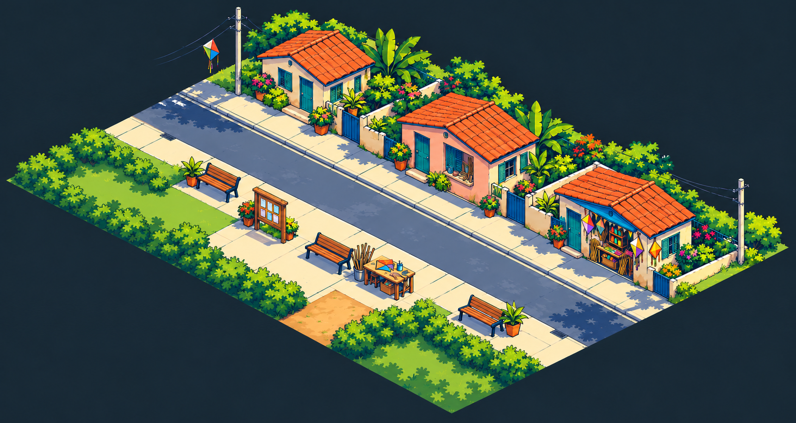

PIP-84 · CONCEITO EM REVISÃO · SEM ALTERAR O JOGORua dos Ventos
Casa de Kael, residência e ateliê do Assis, loja de pipas e praça do bairro. Compare a proposta de acabamento com a planta. O conceito gerado é um estudo: a tolerância de 4 px e o encaixe dos objetos ainda precisam ser resolvidos na produção modular.

Ciano: pegadas da planta. Coral: centros das células de entrada. Sobreposição com erro indica trabalho pendente; não é aprovação geométrica.Contrato de medidas e inventário · Registro geométrico sobre a referência